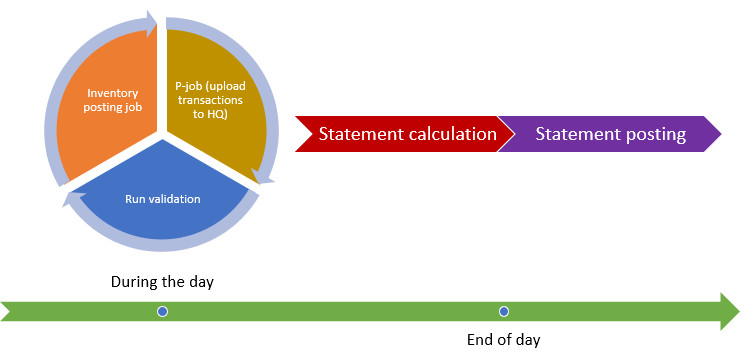

Konsistenzprüfung für Einzelhandelstransaktionen
Important
Dynamics 365 Retail ist jetzt Dynamics 365 Commerce und bietet umfassende Handelsfunktionen für alle Kanäle – von E-Commerce über Shops bis hin zu Callcentern. Weitere Informationen zu diesen Änderungen finden Sie unter Microsoft Dynamics 365 Commerce.
In diesem Thema werden die Funktionen der Konsistenzprüfung für Transaktionen in Microsoft Dynamics 365 Commerce beschrieben. Die Konsistenzprüfung ermittelt und isoliert inkonsistente Transaktionen, bevor sie im Aufstellungsbuchungsprozess verarbeitet werden.
Wird eine Aufstellung gebucht, kann die Buchung aufgrund der inkonsistenten Daten in den Handelstransaktionstabellen fehlschlagen. Die Datenfehler können durch unvorhergesehene Probleme in der Verkaufsstellenanwendung oder durch Fehler beim Importieren von Buchungen aus POS-Systemen von Drittanbietern auftreten. Im Folgenden sind Beispiele für diese Inkonsistenzen aufgeführt:
- Der Transaktionsgesamtbetrag in der Kopftabelle entspricht nicht dem Transaktionsgesamtbetrag der Positionen.
- Die Positionsanzahl in der Kopftabelle entspricht nicht der Anzahl von Positionen in der Transaktionstabelle.
- Die Steuern in der Kopftabelle stimmen nicht mit dem Steuerbetrag in den Positionen überein.
Wenn inkonsistente Transaktionen durch den Aufstellungsbuchungsprozess verarbeitet werden, werden inkonsistente Verkaufsrechnungen und Zahlungserfassungen erstellt, und der gesamte Aufstellungsbuchungsprozess schlägt anschließend fehl. Das Wiederherstellen der Aufstellungen aus einem solchen Zustand umfasst komplexe Datenkorrekturen in mehreren Transaktionstabellen. Die Konsistenzprüfung für Transaktionen verhindert solche Probleme.
Das folgende Diagramm veranschaulicht den Buchungsprozess mit Transaktionskonsistenzprüfung.

Der Stapelverarbeitungsvorgang Geschäftsbuchungen überprüfen prüft die Konsistenz der Handelstransaktionstabellen in folgenden Szenarien.
- Debitorenkonto – Überprüft, dass das Debitorenkonto in den Transaktionstabellen in den HQ-Debitorenmasterdaten vorhanden ist.
- Positionsanzahl – Prüft, ob die Positionsanzahl, wie in der Tabelle in der Transaktionskopfzeile angegeben, mit der Anzahl der Positionen in den Verkaufstransaktionstabellen übereinstimmt.
- Preis enthält Steuer prüft, ob der Parameter Preis enthält Steuer in den Buchungspositionen konsistent ist und ob der Preis aus der Auftragsposition der Konfiguration für Steuern und Steuerbefreiungen entspricht.
- Zahlungsbetrag prüft, ob die Zahlungsdatensätze dem Zahlungsbetrag in der Kopfzeile entsprechen. Auch die Konfiguration zur Centrundung im Hauptbuch wird hierbei berücksichtigt.
- Bruttobetrag prüft, ob der Bruttobetrag in der Kopfzeile der Summe der Nettobeträge aus den Positionen zuzüglich der Steuern entspricht. Auch die Konfiguration zur Centrundung im Hauptbuch wird hierbei berücksichtigt.
- Nettobetrag prüft, ob der Nettobetrag in der Kopfzeile der Summe der Nettobeträge aus den Positionen entspricht. Auch die Konfiguration zur Centrundung im Hauptbuch wird hierbei berücksichtigt.
- Unter-/Überzahlung prüft, ob die Differenz zwischen dem Bruttobetrag in der Kopfzeile und dem Zahlungsbetrag nicht die maximale Unter- bzw. Überzahlungskonfiguration übersteigt. Auch die Konfiguration zur Centrundung im Hauptbuch wird hierbei berücksichtigt.
- Rabattbetrag prüft, ob der Rabattbetrag in den Rabatttabellen und der Rabattbetrag in den Tabellen mit den Buchungspositionen konsistent ist, und ob der Rabattbetrag in der Kopfzeile der Summe der Rabattbeträge aus den Positionen entspricht. Auch die Konfiguration zur Centrundung im Hauptbuch wird hierbei berücksichtigt.
- Positionsrabatt prüft, ob der Positionsrabatt der Buchungsposition der Summe aller Positionen in der Rabatttabelle entspricht, die sich auf die Buchungsposition bezieht.
- Geschenkkartenartikel – Commerce unterstützt keine Rückgabe von Geschenkkartenartikeln. Allerdings kann der Wert einer Geschenkkarte bar ausgezahlt werden. Bei allen Geschenkkartenartikeln, die anstelle einer Barauszahlungsposition als Rückgabeposition verarbeitet werden, schlägt der Aufstellungsbuchungsprozess fehl. Bei der Validierung von Geschenkkartenartikeln wird sichergestellt, dass die einzigen Rückgabepositionsartikel der Geschenkkarte in den Transaktionstabellen Barauszahlungspositionen sind.
- Negativer Preis – Überprüft, dass es keine Transaktionspositionen mit negativen Preisen gibt.
- Artikel und Variante: Prüft, ob Artikel und Varianten aus den Transaktionspositionen in der Masterdatei mit Artikeln und Varianten vorhanden sind.
- Steuerbetrag: Prüft, ob die Steuerdatensätze den Steuerbeträgen in den Positionen entsprechen.
- Seriennummer - Überprüft, ob die Seriennummer in den Transaktionspositionen für Artikel vorhanden ist, die über die Seriennummer gesteuert werden.
- Vorzeichen - Überprüft, ob die Vorzeichen für die Menge und den Nettobetrag in allen Transaktionspositionen gleich sind.
- Geschäftsdatum prüft, ob die Finanzperioden bei allen Geschäftsdaten der Buchungen offen sind.
- Belastungen prüft, ob der Betrag in Kopfzeile und Position dem Preis entspricht. Hierbei wird auch die Konfiguration für Steuern und Steuerbefreiungen berücksichtigt.
Konsistenzprüfung einrichten
Konfigurieren Sie unter Retail und Commerce > Retail und Commerce IT > POS-Buchung den Stapelverarbeitungsvorgang „Geschäftsbuchungen überprüfen“ so, dass er regelmäßig ausgeführt wird. Der Batchauftrag kann basierend auf der Shoporganisationshierarchie in ähnlicher Weise wie die Funktionen zum Berechnen und Buchen im Stapel geplant werden. Es wird empfohlen, diesen Batchauftrag so zu konfigurieren, dass mehrmals am Tag ausgeführt wird, und ihn so zu planen, dass er am Ende jeder P-Auftragsausführung ausgeführt wird.
Ergebnisse des Überprüfungsprozesses
Die Ergebnisse der Überprüfung durch den Stapelverarbeitungsvorgang werden in der entsprechenden Handelstransaktion markiert. Das Feld Überprüfungsstatus im Transaktionsdatensatz wird entweder auf Erfolgreich oder Fehler festgelegt und das Datum der letzten Prüfungsausführung wird im Feld Uhrzeit der letzten Überprüfung angezeigt.
Um eine ausführlichere Fehlerbeschreibung in Bezug auf einen Validierungsfehler zu erhalten, wählen Sie den entsprechenden Shoptransaktionsdatensatz aus und klicken auf die Schaltfläche Überprüfungsfehler.
Transaktionen mit Überprüfungsfehlern und noch nicht validierte Transaktionen werden nicht in Aufstellungen einbezogen. Während des Prozesses „Auszug berechnen“ werden Benutzer darüber informiert, wenn Transaktionen vorliegen, die in die Aufstellung aufgenommen hätten werden können, wo dies jedoch nicht der Fall war.
Wenn ein Überprüfungsfehler gefunden wird, können Sie ihn nur beheben, indem Sie sich an den Microsoft Support wenden. In einer zukünftigen Version werden Funktionen hinzugefügt, mit denen Benutzer die Fehler, die in der Benutzeroberfläche erfolgten, in den Datensätzen selbst beheben können. Es werden außerdem Protokollierungs- und Überwachungsfunktionen zur Nachverfolgung des Änderungsverlaufs bereitgestellt.
Note
In zukünftigen Versionen werden zudem zusätzliche Validierungsregeln zur Unterstützung weiterer Szenarien hinzugefügt.